You're not imagining it
"Why can't I remember simple words?" "Why am I exhausted after a full night's sleep?" "Why am I suddenly anxious about everything?" "Why don't I recognise myself anymore?"It's not just you. And it's not "just stress".
If you've been asking questions like these, you're in the right place. What's happening to you is real, it has a name — and the research finally has answers. We read 100+ pages of new studies every month and turn them into one clear, ten-minute brief.
Recognise yourself?
Does any of this sound familiar?
Many women describe brain fog, deep exhaustion, sudden anxiety, rage, sensory overload, sleepless nights and a quiet loss of confidence — often long before anyone says the word menopause.
This is hard. You're not imagining it. And it isn't "just stress".

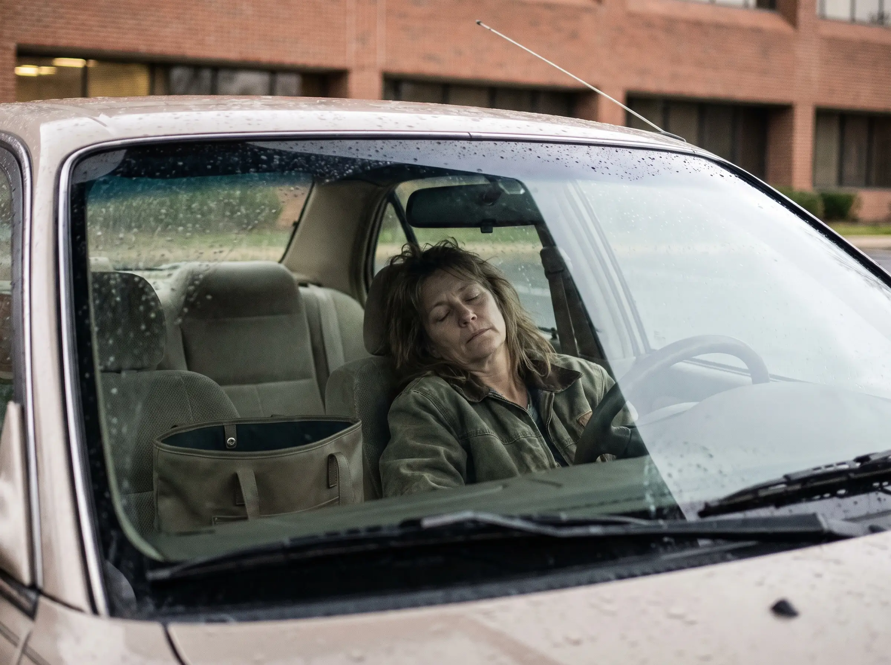
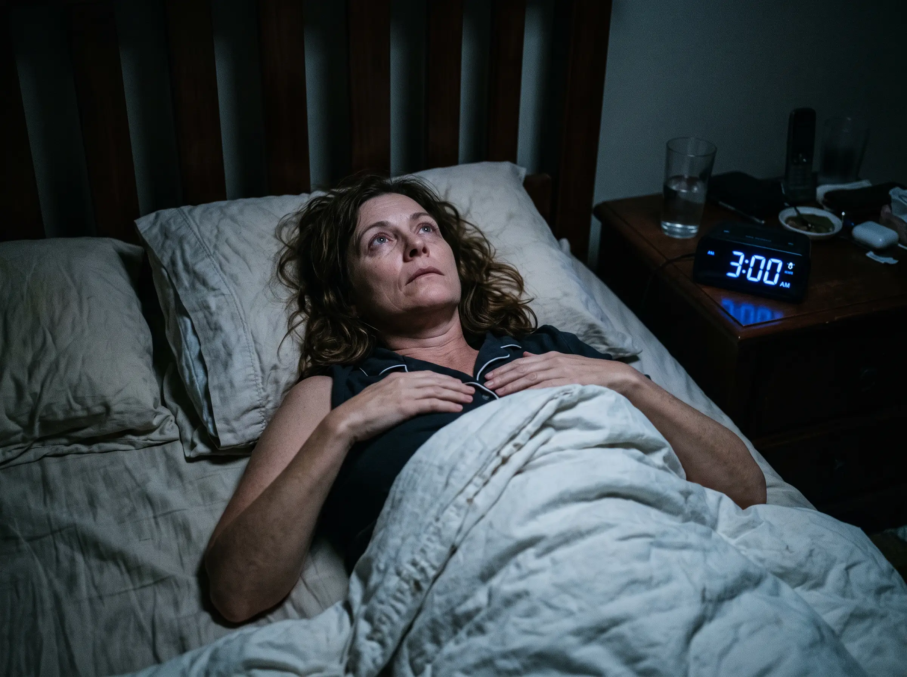
None of this means you're broken, lazy or "losing it". It's biology — and understanding what's happening is the first step towards feeling better. Start here →
The problem
The research exists. Nobody has time to read it.
Women are overwhelmed
The landscape of products and "solutions" for menopause-related challenges is scattered and noisy. Money, time and wellbeing suffer while trusted, cohesive guidance stays hard to find.
Doctors are stretched
With limited time and ageing guidelines, many clinicians lack a trusted, current digest of the evidence — and hesitate to act on it. Patients feel the gap.
Organisations fly blind
HR teams lose senior female talent without knowing why. Insurers miss both cost signals and commercial opportunities hidden in the latest women's health research.
The idea
A hundred open tabs, replaced by one calm read.
Instead of piecing together contradictory advice, you sit down once a month with a report you can actually trust — and get on with your life.
See how we workHow it works
From 100+ pages of studies to one ten-minute brief
Scan
Every month we monitor the major medical databases and journals for new menopause and women's health research.
Appraise
Each study is critically appraised for quality, sample size and clinical relevance — weak evidence is labelled as such.
Distill
We condense what matters into plain language, with full references so you can always go to the source.
Act
Every report ends with concrete actionables, tailored to you — whether you're a woman, a clinician or an organisation.
Inside the brief
Not a newsletter. A properly appraised evidence report.
Each month you get the findings that matter, each one graded for how strong the evidence actually is — plus what it means for you, and clear next steps. No hype, no cherry-picking, full sources.
- Every finding graded: strong, moderate or emerging
- Plain-language "what this means for you"
- Concrete actionables and full references
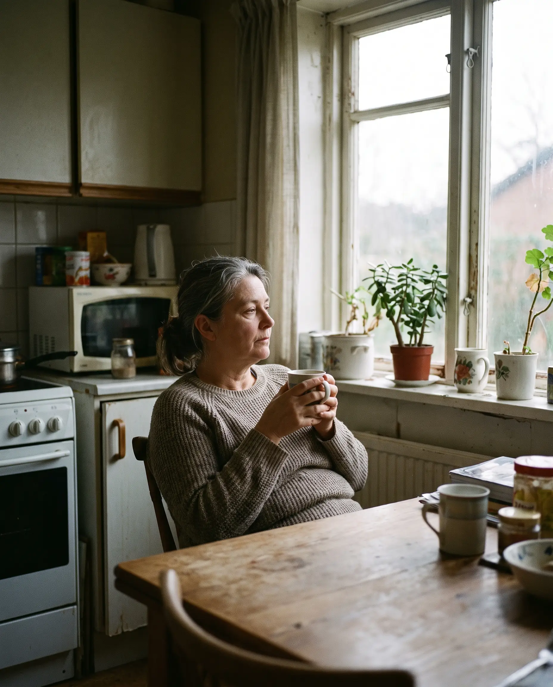
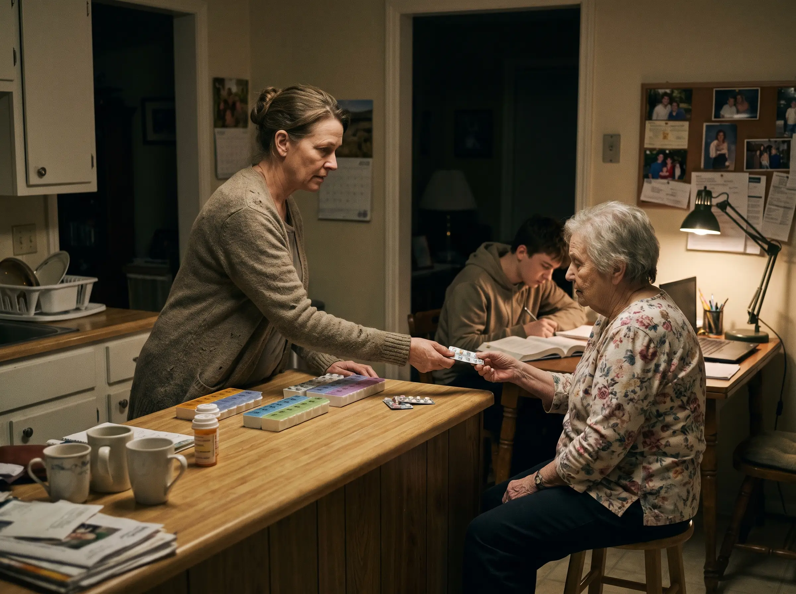
The invisible load
It's not "just hormones". It's hormones colliding with real life.
Work. Teenagers. Ageing parents. Money. Relationships. And then this arrives, uninvited, on top of everything else. That's why we don't just explain the biology — we take the whole picture seriously.
You're not doing this alone
By women, for women
Evidence you can trust — and people who get it.
Women shouldn't have to navigate menopause alone or take supplement adverts at their word. Our community pairs the monthly evidence brief with a safe, judgement-free space to talk it through.
Explore the communityWho it's for
One evidence base. Four tailored briefings.
Understand your body — without the noise
Evidence-based knowledge and a community of women who get it. Hosted on Skool.
Join the community →The clinical low-down, monthly
Current evidence, appraised and referenced — built for consultations, not conferences.
See the clinician brief →Retain your senior female talent
The business case, the evidence and the policy toolkit — ready to present to leadership.
See the HR brief →See the risk signals first
Research intelligence for prevention, cost control and product development in women's health.
See the insurer brief →Why Health Unpaused
Built to be trusted
Time saving
We read the 100+ pages of new studies each month so you don't have to — condensed into a ten-minute read, perfect for a coffee break.
Independent
We represent no company, brand or product. No political agenda, no pharma funding. Our only product is the evidence itself.
All in one resource
One clear, trustworthy report each month with the latest global research — plus actionable tips you can use right away.
Cost effective
Expert-level insight without the consultancy price tag. Hours of professional research for the price of a lunch.
Credible expertise
18+ years of medical research experience in public health, ageing and women's health behind every report.
By women, for women
We've lived it. We research it. Now we're making sure the evidence reaches the people who need it.
Myth vs. evidence
Menopause, debunked
A taste of what we do: the common myths, and what the evidence actually says — from our medical researcher, Nicky Draper.
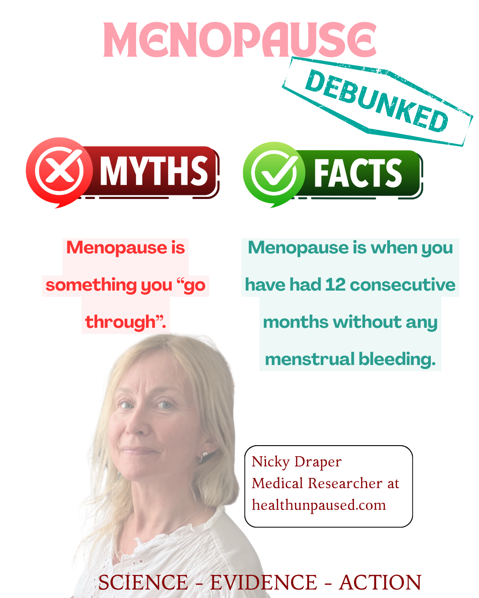
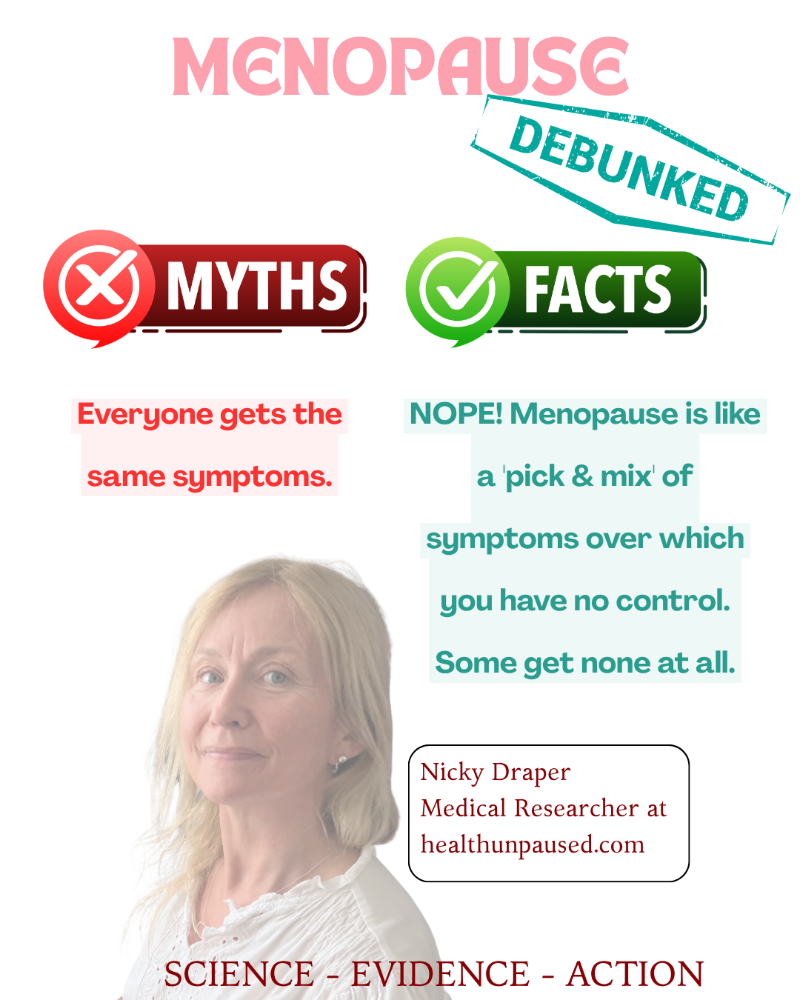
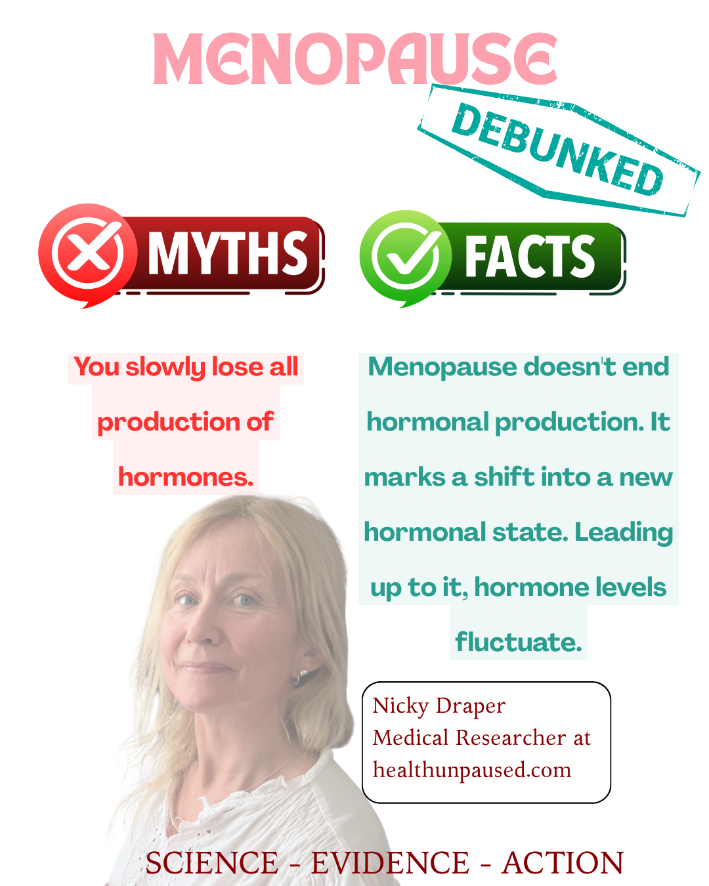
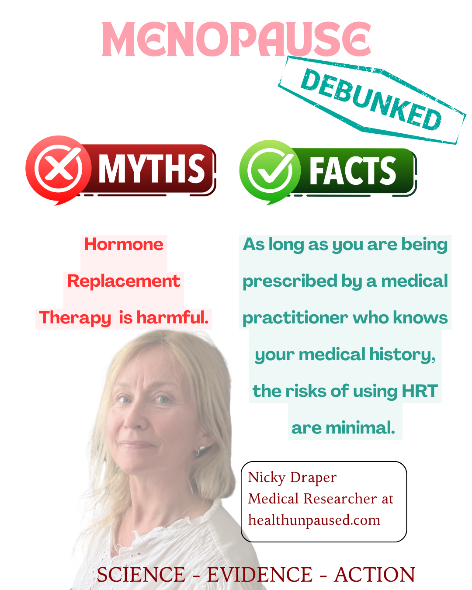
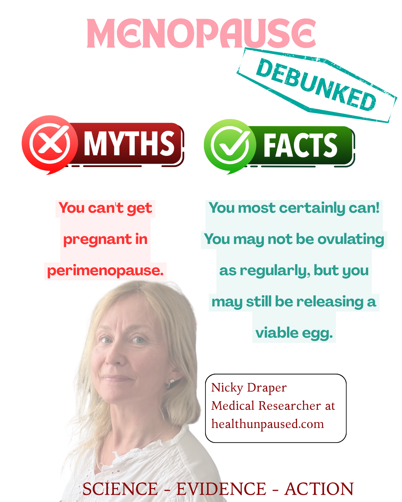
Behind the scenes
Real people. Real menopause. Real work.
No stock models, no agency photoshoot. This is what building Health Unpaused actually looks like — research, humour and hot flushes included.
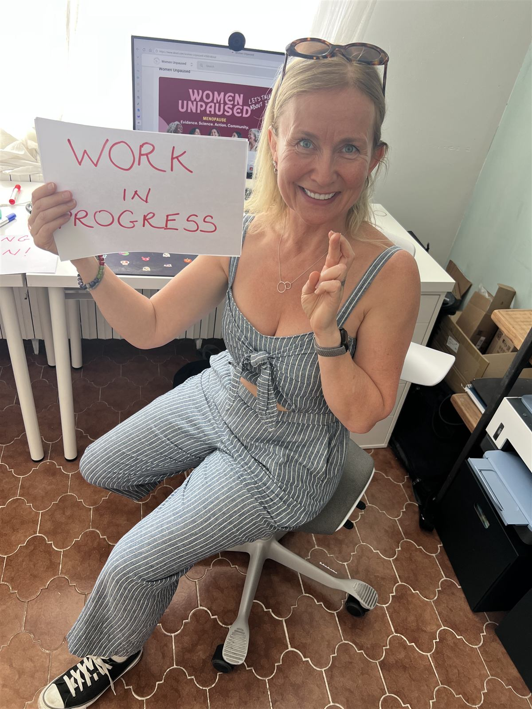
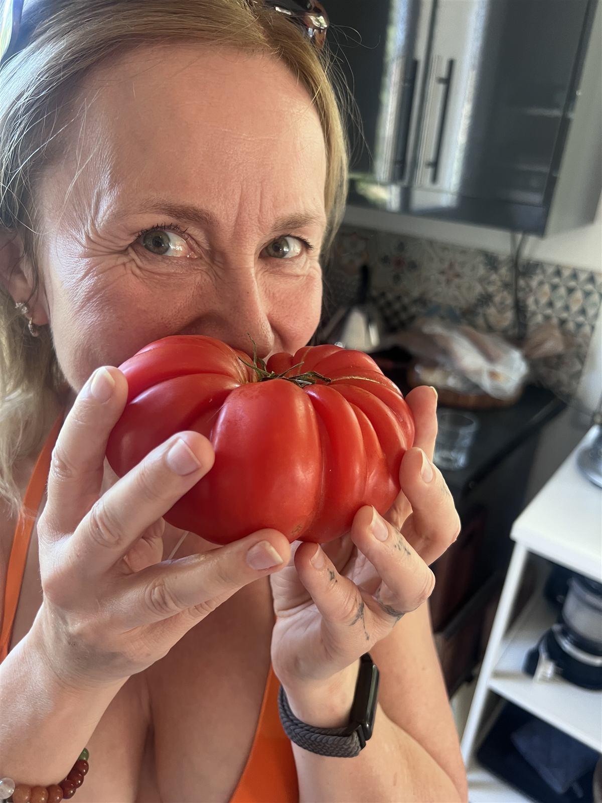
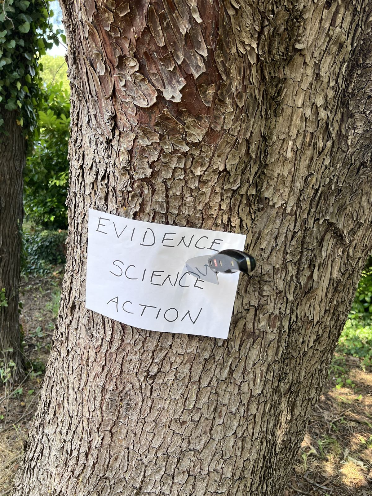
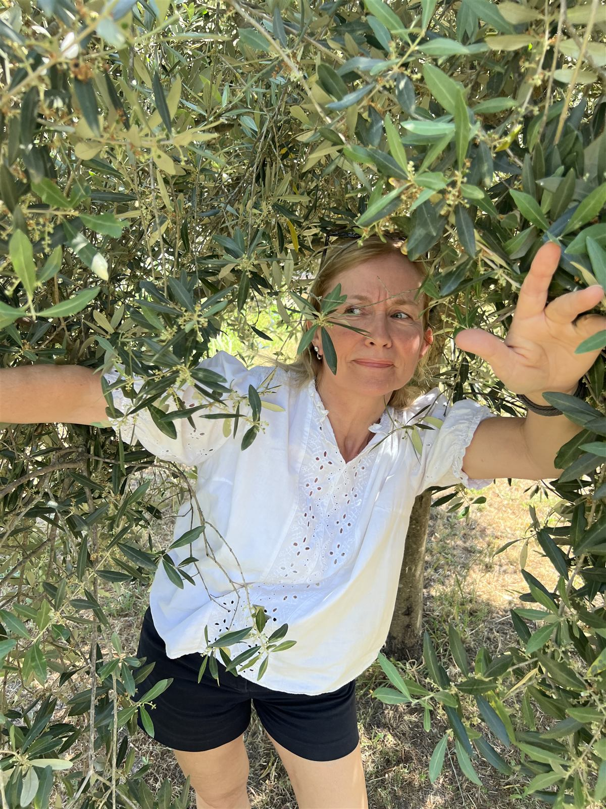
In their own words
Built by people who lived it — and researched it
I'm peri-menopausal, and I've lived the problem we're solving. I saw countless doctors, had endless scans, listened to 50+ hours of menopause podcasts. I didn't find an easy solution — so I created it.
Lived menopause, researched it — now demystifying it. Empowering women to understand their bodies at every stage, with clear, evidence-based health communication.
Become a founding member
We're building Health Unpaused in the open. Join the founding community on Skool — read the briefs first, ask anything, and help shape the reports you receive.
Welcome
Say hello to Health Unpaused
A short introduction from the founders — why we started, what was missing, and how one clear monthly report can replace hours of scattered searching.
Meet the founders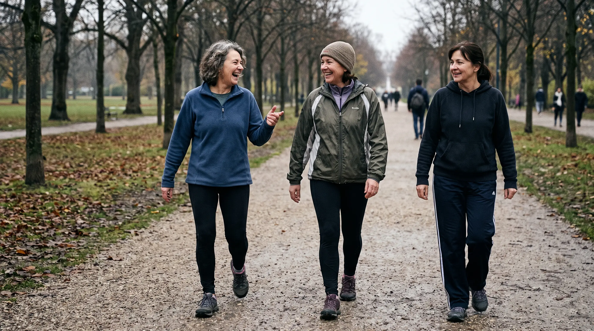
Realistic hope
This won't always feel like this.
You're not developing dementia. You're not lazy. You're not "broken". Understanding what's happening is the first step towards feeling better — and that's exactly where we can help, ten minutes a month.
Choose your briefing